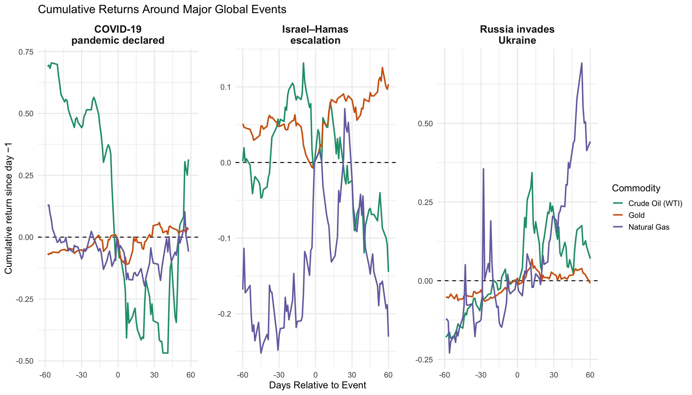

Indexing the three commodities to 100 in 2014 allows us to compare their movements on the same scale since the true market values for each of these assets varies significantly based on value and demand in the global marketplace. Gold shows the most consistent upward trend, with sharp increases during periods of global uncertainty such as 2020 and 2024–2025. This is why Gold is thought to always be the most safe and stable investment, no matter the economic climate. Crude oil displays large event-driven swings—most notably the collapse during early 2020 and volatility surrounding the Russia–Ukraine invasion. Natural gas is the most erratic and volatile, with frequent spikes and crashes tied to supply disruptions and seasonal demand. Overall, Gold behaves like a steady safe-haven asset, while oil and natural gas react more dramatically to geopolitical matters and market shocks.
The distribution of daily log returns differs noticeably across commodities. Gold has the sharpest, narrowest peak centered at zero, reflecting its role as a low-volatility safe-haven asset. Crude oil and natural gas show wider distributions, indicating more day-to-day price variability. Natural gas shows the heaviest tails, consistent with its tendency toward extreme price swings driven by supply shocks and seasonal demand. Overall, these distributions highlight that the three commodities respond very differently to global events, like the graph above emphasized as well. Using log returns instead of actual plain price differences ensures comparability across assets with different price levels and provides a scale-free measure of daily percentage changes. This way we can ensure our comparisons are fair and unbiased, and is done repeatedly in the following graphs.
The boxplots highlight clear differences in volatility across the three commodities. Gold shows a very tight distribution with minimal outliers, reflecting its stable, low-volatility behavior. Crude oil displays moderate dispersion with occasional large moves tied to geopolitical shocks and shifts in global demand. Natural gas shows the widest spread and the most extreme outliers, underscoring its susceptibility to abrupt weather-driven or supply-driven price swings.
The 30-day rolling volatility plot shows clear spikes in commodity risk during major global events. Natural gas exhibits the highest and most frequent volatility surges, reflecting its sensitivity to supply disruptions and geopolitical risk. Oil shows sharp but less persistent volatility spikes, particularly during the COVID-19 shock and the early phase of the Russia–Ukraine conflict. Gold remains the most stable of the three commodities, with muted volatility changes even during large global shocks—consistent with its behavior as a safe-haven asset. These patterns highlight that not all commodities react equally to global crises, and volatility can reveal more about market stress than prices alone.
The rolling 90-day correlations show how tightly linked these commodity markets are over time. The Oil–Natural Gas pair typically has the strongest and most consistently positive correlation, reflecting their shared exposure to global energy demand and supply shocks. Correlations involving Gold are generally lower and more unstable, which fits the idea that gold behaves differently from energy markets and sometimes moves independently as a safe-haven asset. Around major events highlighted earlier, correlations shift noticeably, suggesting that crises can temporarily pull markets together or push them apart depending on the nature of the shock.
This heatmap provides a higher-level view of how correlation relationships between commodities evolve over time by aggregating the 90-day rolling correlations into monthly averages. While the earlier line graph showed noisy day-to-day fluctuations, this visualization shows more stable structural patterns, such as Oil–Gold correlations frequently turning mildly positive during stressed periods (light purple) and Gold–Natural Gas occasionally going slighlty negative (light red) during commodity-specific shocks. Notably, the darker purple patches around 2020–2022 for Oil–Natural Gas align with the COVID-19 shock and subsequent energy-market disruptions, reinforcing insights from the line plot but in a more interpretable, pattern-oriented format. By smoothing volatility and emphasizing temporal regimes rather than individual movements, the heatmap strengthens our narrative that commodity relationships shift meaningfully in response to global events rather than remaining stable over time.
Abnormal volatility patterns differ sharply across global shocks, and each commodity responds in ways consistent with its economic role. During the COVID-19 declaration, oil experiences an extreme surge in volatility as demand collapsed and supply uncertainty grew, while gold and natural gas show only moderate increases. The Israel–Hamas escalation produces a much smaller and more contained market reaction, with modest volatility rises concentrated in oil and gold. The Russian invasion of Ukraine triggers the largest natural gas volatility spike in the sample, reflecting Europe’s dependence on Russian supply, alongside a notable jump in oil volatility. Overall, different events activate different market channels, revealing how commodity-specific fundamentals shape volatility responses.
Code
#| label: cum-returns-events#| fig.cap: "Cumulative returns around major global events (day −1 = 0)."window <-60# event window in daysreturns_with_events <- commod_raw |> tidyr::crossing(event_dates_win) |>mutate(event_day =as.integer(date - event_date) ) |>filter(event_day >=-window, event_day <= window)ret_event_window <- returns_with_events |>group_by(event, ticker) |>arrange(event_day, .by_group =TRUE) |>mutate(ret_log = tidyr::replace_na(ret_log, 0),cum_log =cumsum(ret_log),pre_event =if_else(any(event_day ==-1), cum_log[event_day ==-1][1], cum_log[event_day ==0][1] ),cum_log_rel = cum_log - pre_event,cum_return_pct =exp(cum_log_rel) -1 ) |>ungroup()ggplot(ret_event_window,aes(x = event_day, y = cum_return_pct, color = ticker)) +geom_hline(yintercept =0, linetype ="dashed") +geom_line(linewidth =1) +facet_wrap(~ event, scales ="free_y") +scale_color_manual(values =c("CL=F"="#1b9e77", # Crude Oil (WTI)"GC=F"="#d95f02", # Gold"NG=F"="#7570b3"# Natural Gas ),labels =c("CL=F"="Crude Oil (WTI)","GC=F"="Gold","NG=F"="Natural Gas" ) ) +labs(title ="Cumulative Returns Around Major Global Events",x ="Days Relative to Event",y ="Cumulative return since day −1",color ="Commodity" ) +theme_minimal(base_size =14) +theme(strip.text =element_text(size =15, face ="bold"),panel.spacing =unit(2, "lines"))

These graphs track cumulative returns over a 120-day window around each crisis (60 days before, 60 days after), setting day −1 to zero so we can compare how each commodity moves through the event. Gold tends to drift upward during each event, consistent with its role as a safe-haven asset. Oil and natural gas show much sharper swings: both sell off around COVID-19 but rally strongly around the Ukraine invasion, while the Israel–Hamas escalation produces more muted but still positive moves. Together with the volatility plots, this graph shows that crises do not just increase risk; they systematically reprice commodities in different directions, with natural gas and oil reacting most strongly and gold providing steadier, more defensive performance (as expected).
3.1 Non technical summary:
The analysis above shows that crude oil, gold, and natural gas behave very differently over time and respond differently to major global events. Gold is the most stable, oil shows moderate swings, and natural gas is the most volatile. During crises—such as COVID-19 and the Russia–Ukraine invasion—volatility spikes sharply for natural gas and oil, while gold remains relatively steady. We also find that relationships between commodities shift over time: oil and natural gas often move together, while gold tends to act independently. It is additionally important to note that the nature of the crisis will also play a role in how the assets move long term, while the initial reactions can be repetitive. Overall, the results reveal clear differences in each commodity’s risk profile and how strongly each reacts to global shocks.